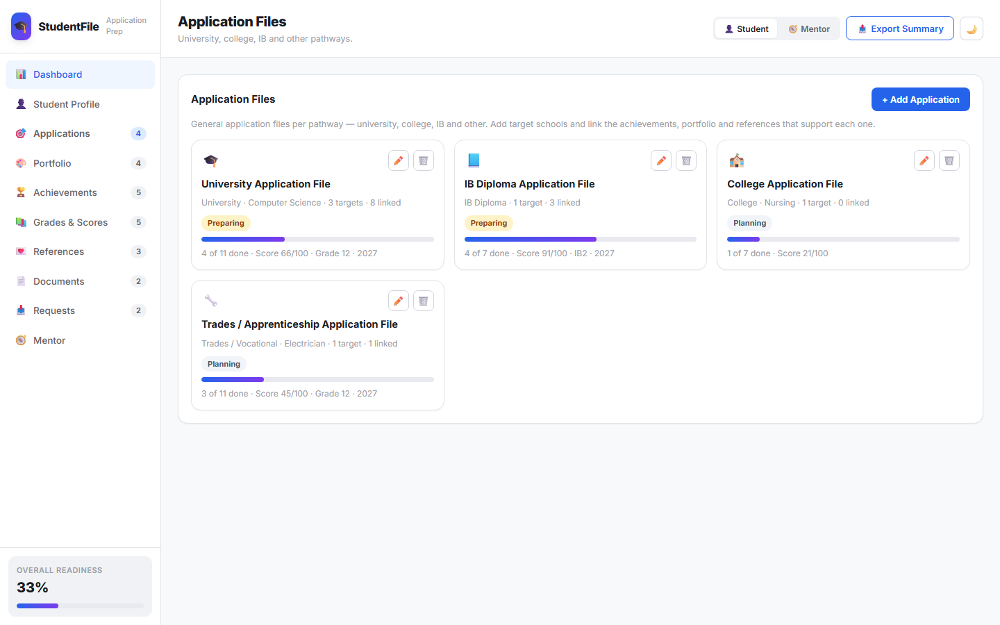

Career Coach
Eğitim El Kitabı
Career coach rolü için uygulama el kitabı: FBA, Student File, Kanada eğitim yolları, görüşme yönetimi, başvuru süreci ve rol sınırları.
İçindekiler
Hızlı başlangıç: 60 saniyede rol
Bir career coach olarak, bir lise öğrencisinin kendi hedefini netleştirmesine, bu hedefi Student File içinde kanıtlarla takip etmesine ve başvuruya ya da bir sonraki adıma zamanında hazır olmasına yardım edeceksin. Öğrencinin yerine karar vermeyecek, dosyayı onun adına doldurmayacak veya essay yazmayacaksın.
Yap
- Öğrencinin kendi sözleriyle hedefini yaz.
- Her görüşmede tek bir sonraki adım ve tarih belirle.
- Dosyayı öğrenciyle birlikte aç; öğrenciye yaptır.
- Kanıtı ve kaynağı kontrol et; varsayımı not etme.
- Şüphede kalınca programme lead'e sor.
Yapma
- “Kesin kabul alırsın” veya “bu bursu alırsın” deme.
- Öğrencinin essay'ini yazma veya cümlelerini yeniden yazma.
- Fiziki merkez, kampüs veya açılış tarihi vaat etme.
- Göçmenlik, hukuk veya tıbbi tavsiye verme.
- Öğrenci verisini kişisel cihaz veya özel mesaja taşıma.
Future Bridge Academy'yi tanı
FBA'nın ne olduğunu, kime hizmet ettiğini, neyin çalıştığını ve neyin asla vaat edilmediğini öğren.
1.1 Tek cümlede FBA
Future Bridge Academy (FBA), Kanada'daki lise ve ortaokul öğrencilerine ücretsiz haftalık online matematik dersleri, aylık ücretsiz deneme sınavları, seminerler ve gönüllü mentorluk sunan; öğrencinin hedeflerini ve başvuru kanıtlarını Student File içinde birleştiren bir eğitim programıdır.
FBA bir okul değildir, üniversite değildir ve diploma vermez. NCF Education altında yürütülen bir programdır; Vancouver'da CentreCanada Newcomer Services Society, diğer şehirlerde ise yerel partner dernekler altında yürütülür.
Önce ücretsiz
Haftalık online matematik, aylık deneme sınavı, seminerler ve topluluk ücretsizdir. Ücretli bir hizmet varsa aileye önceden açıkça söylenir; fiyat bilgisini sen vermezsin, programme lead verir.
Öğrencinin gündemine hizala
Ders ve deneme, mümkün olduğunca öğrencinin o hafta okulda gördüğü konuya bağlanır; ancak bu her zaman mümkün olmayabilir. Bazı haftalarda ders dışı etkinlikler, ek kurslar, yarışmalar veya gönüllü faaliyetler öne çıkar ve yönlendirme buna göre yapılır. Rastgele worksheet veya yılın tamamını kapsayan tek bir sınav yoktur.
Student File merkezde
Profil, hedefler, başvurular, portföy, notlar, referanslar ve son tarihler aynı dosyada tutulur. Koç ayrı bir takip sistemi açmaz.
1.2 Kime hizmet ettiğini bil
- Grades 4-12 öğrencileri; matematik ilk ve ana ders.
- Kanada okul sistemini öğrenmek isteyen aileler; velilerin sistemi öğrenmesi de desteklenir.
- College, trades, university, IB veya AP yollarından birine hazırlanan lise öğrencileri.
- Ücretsiz derse veya aylık deneme sınavına tek başına katılmak isteyen, başka bir programa bağlı olmayan aileler.
1.3 Çalışan hizmetler, planlananlar ve fiziki mekân
| Başlık | Durum | Senin için doğru dil |
|---|---|---|
| Haftalık online matematik dersi | Çalışıyor | “Her hafta canlı, online ve ücretsiz bir matematik dersi var.” |
| Aylık deneme sınavı | Çalışıyor | “Ayda bir, okulda işlenen konudan, yüz yüze ve ücretsiz bir deneme sınavı yapılır; online versiyonu yoktur.” |
| Burs ve veli seminerleri | Çalışıyor | “Seminerler ücretsizdir; tarihler topluluk kanalından duyurulur.” |
| Gönüllü mentor ağı ve career coaching | Çalışıyor | “Birebir career coaching online yürür; saatler programme lead ile kararlaştırılır.” |
| CEMC trial exam | Etkinlik bazlı | “CEMC denemesi resmi yarışma değildir; okulun sipariş ettiği asıl sınavdan ayrı bir pratik oturumudur.” |
| Yazılı yol planı, CEMC kulübü, IB/AP hazırlığı, İngilizce ve yazma | Planlanan / aşamalı | “Şu anda hangi hizmetin açık olduğunu programme lead söyler; ben tarih vermem.” |
| Fiziki merkez / kampüs | Plan yok | “FBA'nın fiziki merkez planı yoktur. Fiziki mekân yalnızca aylık deneme sınavı için kullanılır. ‘Merkez açılınca’ gibi bir vaat vermeyin.” |
Not: Hizmet durumu değişebilir. Bir hizmeti “açık” diye anlatmadan önce programme lead'in o dönemki onayını al.
1.4 FBA'yı farklı yapan şeyi gör
- Ücretsiz olan gerçekten ücretsizdir. Ücretsiz ders, deneme ve seminerler bir satış hunisi değildir.
- Kanıt esastır. Çalışmayan bir şey “çalışıyor” diye anlatılmaz; açılmayan bir tarih açıklanmaz.
- Öğrenci dosyası öğrencinin aracıdır. Sen dosyayı öğrenci adına doldurmazsın; öğrencinin kendi kanıtını üretmesine yardım eder.
- Gönüllülük ciddiye alınır. Saatler yazılıdır, eğitim vardır, geri bildirim vardır ve referans gerçek işi anlatır.
1.5 Senin söyleyebileceğin ve söyleyemeyeceğin şeyler
| Güvenli dil | Yasak dil |
|---|---|
| “Bu hedef için hangi ön koşullar gerektiğini birlikte kontrol edelim.” | “Bu notlarla kesin kabul alırsın.” |
| “Bu bursun resmi sayfasını açıp son tarihi ve uygunluğu doğrulayalım.” | “Bu bursu sana ben ayarlarım.” |
| “Bu hafta tek bir sonraki adım seçelim; hangisi senin için gerçekçi?” | “Sen şunu yap, gerisini ben hallederim.” |
| “Bu konu benim rolümün dışında; doğru uzmana yönlendireceğim.” | “Göçmenlik/vize konusunda şöyle yapmalısın.” |
| “FBA'nın fiziki merkez planı yok; deneme sınavı bir topluluk mekânında yapılıyor.” | “Merkez açılınca orada yüz yüze çalışacağız.” |
1.6 FBA sözlüğü: öğrenmen gereken 10 terim
Student File
Öğrencinin profili, başvuruları, kanıtları, notları ve son tarihlerini tutan merkezi uygulama.
Mock exam
Aylık, yüz yüze, okul konusundan, ücretsiz deneme sınavı. Online versiyonu yoktur; resmi sınav değildir.
CEMC
University of Waterloo'nın matematik ve bilgisayar yarışma programı. Okul sipariş eder; öğrenci tek başına resmi sınava kaydolamaz.
Pathway
Lise sonrası yol: university, college, trades, IB veya AP gibi seçeneklerden biri.
Prerequisite
Bir dersi veya programı almadan önce tamamlanması gereken ders ya da koşul.
Transcript
Resmi veya güncel not dökümü. Başvuruda genellikle okul gönderir.
Predicted grade
Öğretmenin/okulun dönem sonu için öngördüğü not; özellikle IB/AP ve erken başvurularda kullanılır.
Bursary / scholarship
Burs: çoğunlukla ihtiyaç veya topluluk temelli destek. Scholarship: çoğunlukla başarı/yarışma temelli. Her ikisinin de kuralı farklıdır.
Waitlist
Kabul edilmediğin ama tamamen reddedilmediğin ara durum. Yedek plan ve kabul tarihi yönetilir.
Readiness
Student File'daki gereksinimlerin tamamlanma oranı. Kabul tahmini değildir; eksikleri görünür kılan bir araçtır.
Career Coach rolün ve başarı tanımın
Ne yapacağını, ne yapmayacağını, başarıyı nasıl ölçeceğini ve saatlerin nasıl belirleneceğini öğren.
2.1 Senin rolünün amacı
Bir öğrencinin “bilmiyorum”dan, kendi gerekçesi olan bir hedefe ve kanıtlanmış bir başvuru dosyasına geçmesine yardım edeceksin. Hedefi sen seçmezsin; öğrencinin seçmesine, test etmesine ve sonuçlandırmasına eşlik edersin.
Senin işin
- Öğrenciyle hedefi ve gerekçesini netleştirmek.
- Student File'ı açmak, hedefe bağlı gereksinimleri kurmak.
- Düzenli görüşmek ve görevleri birlikte yürütmek.
- Kanıtı, son tarihi ve durumu takip etmek.
- Hedef değiştiğinde bunu dosyaya ve plana yansıtmak.
- Öğrenciyi bir sonraki adıma hazırlamak.
Senin işin değil
- Essay, personal statement veya başvuru formu yazmak.
- Öğrenci adına başvuru göndermek.
- Kabul, burs, vize veya iş garantisi vermek.
- Terapi, kariyer testi yorumu veya tıbbi tavsiye vermek.
- Göçmenlik/hukuk/finans danışmanlığı yapmak.
- Aile ile öğrenci arasındaki gizli bilgiyi paylaşmak.
2.2 Başarıyı neyle ölçeriz?
Kabul oranını başarı ölçüsü olarak kullanma; öğrencinin kontrolünde olmayan çok sayıda değişken vardır. FBA'da senin için süreç göstergeleri esastır:
| Gösterge | Hedef | Nerede görünür |
|---|---|---|
| Öğrenci hedefini kendi cümlesiyle söyleyebiliyor | İlk 2 görüşme | Student File profili + mentor notu |
| Hedefe bağlı uygulama dosyası ve gereksinimler kurulu | İlk 2-3 görüşme | Applications sekmesi |
| Her görüşmede en az bir somut ilerleme | Her oturum | Görev/kanıt/not |
| Yaklaşan son tarihler görünür ve sahiplenilmiş | Sürekli | Dashboard + request/target |
| Öğrenci kararlarını ve başvuru hikâyesini anlatabiliyor | Başvuru öncesi | Mock interview / mentor notu |
| Dosya başka bir coach'a devredilebilir | Her ay | Güncel notlar + açık talepler |
2.3 Sorumluluk matrisi
| Karar / iş | Öğrenci | Sen (Coach) | Veli | Programme lead |
|---|---|---|---|---|
| Hedefi seçmek | Karar verir | Sorular sorar, seçenekleri açar | Destekler, baskı kurmaz | Uyuşmazlıkta hakem |
| Dosyayı doldurmak | Yapar | Rehberlik eder, request açar | Gerekli bilgiyi sağlar | Erişim/istisna onayı |
| Essay yazmak | Yazar | Yapı ve geri bildirim verir | Okur, yazmaz | İntihal/uygunsuzluk kararı |
| Başvuruyu göndermek | Gönderir | Son kontrolü yapar | Ödeme/izin desteği | İstisna onayı |
| Göçmenlik/vize sorusu | Sorar | Yetkili uzmana yönlendirir | Karar verir | Yönlendirme listesi |
| Kriz / güvenlik | Bildirir | Derhal protokolü uygular | Bilgilendirilir | Olay yönetimi |
2.4 Saatler, caseload ve sınırlar
- Saatler programme lead ile yazılı olarak kararlaştırılır. Bu el kitabı sabit bir saat sayısı koymaz; saatler, düzenli olarak üstlenebileceğin görüşme yüküne göre belirlenir.
- Caseload, senin kapasiten ve öğrencinin ihtiyacına göre belirlenir. Aynı anda kaç öğrenci alacağını programme lead onaylar.
- Görüşme sıklığı öğrencinin ihtiyacına göre haftalık veya iki haftada bir olabilir; başlangıçta daha sık, başvuru döneminde daha yoğun olabilir.
- Kendi kapasiteni aşan bir taahhüt verme. Az öğrenciyi iyi yönetmen, çok öğrenciyi yarım bırakmandan iyidir.
2.5 Senin rolün ile diğer rollerin farkı
| Rol | Odak | Ne yapar | Ne yapmaz |
|---|---|---|---|
| Career Coach | Tek öğrenci, hedef ve başvuru dosyası | Hedef belirleme, dosya, görev takibi, başvuruya hazırlık | Essay yazma, kabul garantisi, terapi |
| Career Path Presenter | Meslek tanıtımı | Kendi mesleğini öğrenciye ve veliye anlatır | Birebir öğrenci dosyası yönetmez |
| Academic Writing Guide | Yazma becerisi | Konu, yapı ve geri bildirim verir | Öğrencinin metnini yazmaz |
| Online Maths Teacher | Haftalık matematik dersi | Ders anlatır, pratik yaptırır | Başvuru dosyası yönetmez |
| Mock Exam Organiser | Aylık sınav operasyonu | Kayıt, salon, kağıt, sonuç | Öğrencinin pathway planını yönetmez |
2.6 İyi bir coach profili: sana uygun mu?
Bu rol sana uygun mu?
- Kendi university, college veya trades yolunu yürümüşsün.
- Bir gence karşı dürüst, sabırlı ve tutarlısın.
- Son tarihleri takip edersin; söz verdiğin zaman ulaşılabilirsin.
- Aileyle net ve saygılı konuşursun; gerçekçi olanı söylersin.
- Öğrencinin kararını kendi kararından ayırabilirsin.
Bu rol sana uygun değilse
- Öğrencinin yerine başvuru/essay yazmak istersin.
- Kesin kabul, burs veya vize vaadi verirsin.
- Kendi mesleğini/başarını öne çıkarmak istersin.
- Düzenli takip ve belgelemeyi yük görürsün.
- Sınır koymakta zorlanırsın.
2.7 Programın sana sağladıkları
- Eğitim: Bu el kitabı, deneyimli coach gözlemi, süpervizyon ve yeterlilik kontrolü.
- Yazılı saat kaydı: Verdiğin saatler talep ettiğinde yazılı olarak verilir.
- Referans: Gerçekten ne yaptığını anlatan, kontrol edilebilir bir referans.
- Destek mektubu: Uygun olduğunda, talep üzerine.
- Dönem sonu değerlendirmesi: Güçlü yönler ve gelişim alanları.
2.8 Seni bekleyen başvuru ve seçim süreci
- Volunteer formunu doldur ve Career Coach rolünü seç.
- Kısa görüşme; ardından bir örnek vaka: bir öğrencinin durumunu okuyup hedefi, ilk beş görevi ve planı hangi durumda değiştireceğini anlat.
- İki referansın kontrol edilir; karar olumlu veya olumsuz bildirilir.
Sınırlar, etik, safeguarding ve gizlilik
Öğrencinle güvenli çalışmanın kurallarını öğren. Bu bölümde pazarlık yok.
3.1 Öğrenci dosyanın sahibidir
Student File'da mentor görünümü öğrenci içeriğini read-only gösterir. Sen not ekleyebilir, veri talebi açabilir ve yorum bırakabilir; ancak öğrencinin başvuru, portföy veya not içeriğini onun adına doldurmaz. Bu bir teknik kısıt değil, rolün etik çekirdeğidir: öğrenci kendi dosyasını anlatabilmelidir.
3.2 Onay ve gizlilik
- Öğrenci 18 yaşından küçükse veli/guardian onayı alınır; görüşmelerin amacı, sıklığı ve paylaşılacak bilgiler açıklanır.
- Öğrenciye “benimle konuştukların” ile “velinle paylaşacaklarım” arasındaki fark baştan söylenir.
- Güvenlik riski yoksa öğrencinin kişisel paylaşımları veliye aynen aktarılmaz; gelişim ve sonraki adım paylaşılır.
- Notlarda yalnızca süreç için gerekli bilgi tutulur; gereksiz sağlık, aile veya kimlik detayı yazılmaz.
- Öğrenci fotoğrafı, alıntısı veya başarısı yazılı izin olmadan hiçbir yerde kullanılmaz.
3.3 Reşit olmayan öğrenciyle online çalışırken uyacakların
Güvenli çalışma
- Yalnızca FBA'nın onayladığı platformda görüş.
- Görüşme saatini veliyle paylaşılan takvimde tut.
- Kamera açık, uygun bir ortamda ol; öğrenci kamerası zorunlu değil.
- İlk ve son 5 dakikada velinin katılmasını teklif et.
- Öğrenciyle özel sosyal medya, kişisel telefon veya gizli mesajlaşma kurma.
Kırmızı çizgiler
- Öğrenciyle yalnız başına kapalı fiziki ortamda buluşma.
- Hediye, para veya özel iyilik alışverişi.
- Öğrenciyi özel aracınla taşıma.
- Duygusal/sırdaş ilişki kurma; koçluk sınırını aşma.
- Öğrencinin rızası olmadan ekran görüntüsü alma.
3.4 Acil durum ve safeguarding protokolü
Öğrenci kendine zarar verme, istismar, ihmal, evsizlik veya yakın tehlike bildirirse:
3.5 Veri ve dijital güvenlik
- Öğrenci bilgisi yalnızca onaylı Student File ve FBA sistemlerinde tutulur; kişisel e-posta, WhatsApp veya kişisel drive'a kopyalanmaz.
- Ekran görüntüsü, dosya indirme ve paylaşım yalnızca programme lead'in onayladığı yöntemle yapılır.
- Şifreler paylaşılmaz; oturumlar kilitli cihazda tutulur.
- Yanlış kişiye e-posta veya dosya giderse derhal programme lead'e bildir; sessizce silmeye çalışma.
- Kanada gizlilik ilkeleri ve FBA'nın veri koruma kurallarına uy; şüphede kalırsan paylaşmadan önce sor.
3.6 AI kullanımı
Student File içindeki AI Mentor Assistant bir fikir ve kontrol aracıdır; karar mercii değildir.
- AI çıktısını doğrulamadan öğrenciye “gerçek” diye aktarma.
- Öğrencinin kişisel verisini onaylı olmayan dış AI araçlarına yapıştırma.
- AI'ya essay yazdırma; öğrencinin kendi sesi ve emeği korunur.
- AI'nın önerdiği burs, tarih veya program bilgisini resmi kaynaktan kontrol et.
3.7 Eşitlik, erişilebilirlik ve kültürel hassasiyet
- Aile yapısı, din, göçmenlik durumu, dil, engellilik veya gelir hakkında varsayım yapma; sor ve öğren.
- Dil desteği gerekiyorsa tercüman/çeviri kullan; öğrencinin veya velinin anlamadığı dili kullanma.
- Görüşme materyallerini erişilebilir biçimde sun: büyük yazı, captions, ek süre, sade dil.
- Öğrencinin güçlü yönlerini ve bağlamını gör; yalnızca not ortalamasına indirgeme.
3.8 Çıkar çatışması ve sınır ihlalleri
- FBA öğrencisine ücretli özel koçluk/danışmanlık satma.
- Yönlendirdiğin bir kurumdan komisyon veya kişisel çıkar alma.
- Öğrencinin velisiyle veya yakınıyla ikili iş ilişkisi kurma; varsa programme lead'e bildir.
- Öğrencinin yerine karar verecek kadar yakınlaşma; “benim öğrencim” değil, “birlikte çalıştığım öğrenci” dili kullan.
3.9 Ne zaman escalate edilir?
| Durum | İlk adım | Kime |
|---|---|---|
| Yakın tehlike / kendine zarar | 911 (gerekirse), öğrenciyi yalnız bırakma | Programme lead, aynı gün |
| İstismar/ihmal şüphesi | Dinle, not et, soruşturma yapma | Programme lead / safeguarding sorumlusu |
| Göçmenlik, vize, hukuk | “Bu alanın uzmanına yönlendireceğim” | Yetkili danışman/avukat |
| Ücret, ödeme, burs kuralı | Fiyat verme, söz verme | Programme lead |
| Veri ihlali | Yayılmayı durdur, kaydet | Programme lead, derhal |
| Akademik dürüstlük ihlali | Dur, öğrencinin kendi işini iste | Programme lead |
Kanada eğitim sistemi ve pathway okuryazarlığı
Eyalete göre değişen kuralları doğru kaynaktan nasıl kontrol edeceğini öğren.
4.1 Temel yapı
Kanada'da eğitim eyalet ve bölge sorumluluğundadır. Bu yüzden mezuniyet kredisi, zorunlu dersler, sınavlar, okul takvimi ve başvuru portalları eyaletten eyalete değişir. Senin işin tüm eyaletleri ezberlemek değil, öğrencinin eyaletini, mezuniyet yılını ve hedef programını belirleyip doğru resmi kaynaktan doğrulamaktır.
K-12
İlkokul ve lise. Grade 12 sonunda diploma veya eyalet mezuniyet belgesi alınır.
Post-secondary
University (lisans), college (diploma/advanced diploma), trades/apprenticeship ve diğer sertifika programları.
Özel programlar
IB Diploma Programme, Advanced Placement (AP), dual credit, French immersion, coop ve specialist programs.
4.2 Her öğrenci için yapacağın eyalet kontrolü
İlk görüşmede şu altı soruyu netleştir ve Student File'a yaz:
| Soru | Neden önemli | Nerede doğrulanır |
|---|---|---|
| Hangi eyalet/bölge ve hangi okul? | Mezuniyet ve başvuru kuralları eyalete bağlı. | Okul rehberliği + eyalet eğitim bakanlığı |
| Hangi mezuniyet yılı? | Kurallar yıl içinde değişebilir; öğrencinin kohortu esastır. | Eyalet mezuniyet sayfası |
| Kaç kredi ve hangi zorunlu dersler? | Eksik ders mezuniyeti ve başvuruyu geciktirir. | Eyalet mezuniyet gereksinimleri |
| Hangi değerlendirmeler var? | Literacy/numeracy assessment veya diploma exam olabilir. | Eyalet sınav sayfası |
| Hedef program hangi dersleri istiyor? | Prerequisite zinciri Grade 11'de başlar. | Üniversite/college program sayfası |
| Başvuru hangi portal/doğrudan mı? | Yanlış portal veya tarih başvuruyu kaçırır. | Eyalet portalı + kurum sitesi |
4.3 Ders ve prerequisite mantığı
- Prerequisite, bir sonraki dersi almadan önce tamamlanması gereken derstir. Örneğin Grade 11 matematik olmadan bazı Grade 12 matematik dersleri alınamaz.
- Lise dersleri genellikle academic/university, college ve workplace hedeflerine göre farklı kodlanır; isimler eyalete göre değişir.
- Grade 11 final notları ve Grade 12 predicted/interim notları başvuruda birlikte kullanılabilir.
- Bir dersin “alınmış” olması, hedef program için yeterli not alındığı anlamına gelmez; programın minimum not ortalaması ve ders notu eşiği ayrıdır.
- Yaz okulu, online ders, night school veya upgrading ile eksik ders telafi edilebilir; ancak kontenjan, tarih ve kabul koşulları okuldan doğrulanır.
4.4 Grade bazında izleyeceğin yol haritası
4.5 Eyalet ve portal hızlı referansın
Aşağıdaki tablo yalnızca nereden kontrol edileceğini gösterir; kesin kural değildir.
| Eyalet / bölge | Mezuniyet ve K-12 kontrolü | Lise sonrası başvuru |
|---|---|---|
| British Columbia | gov.bc.ca → Education and training → K-12 | EducationPlannerBC; bazı kurumlar doğrudan |
| Ontario | ontario.ca → High school graduation requirements | OUAC (101/105); college için ontariocolleges.ca |
| Alberta | alberta.ca → Graduation requirements | ApplyAlberta; bazı kurumlar doğrudan |
| Manitoba | edu.gov.mb.ca → K-12 | Kurumların kendi başvuru sayfaları |
| Saskatchewan | saskatchewan.ca → Education | Kurumların kendi başvuru sayfaları |
| Nova Scotia | ednet.ns.ca | Kurumların kendi başvuru sayfaları |
| New Brunswick | gnb.ca → Education | Kurumların kendi başvuru sayfaları |
| Newfoundland and Labrador | gov.nl.ca → Education | Kurumların kendi başvuru sayfaları |
| Prince Edward Island | princeedwardisland.ca → Education | Kurumların kendi başvuru sayfaları |
| Quebec | quebec.ca → Education | CEGEP ve üniversite başvuruları; sistem farklıdır |
| Yukon / NWT / Nunavut | İlgili bölge eğitim bakanlığı | Kurumların kendi başvuru sayfaları |
Ontario'da 101/105 ayrımı öğrencinin liseyi Ontario'da okuyup okumamasına göre değişir; hangi başvuru tipinin geçerli olduğunu OUAC sayfasından doğrula.
4.6 Üç ana yol: university, college, trades
| Yol | Ne sunar? | Tipik süre | Başvuruda ne önemli? | Senin kontrolün |
|---|---|---|---|---|
| University | Lisans/degree; teori, araştırma ve geniş kariyer yolları | 3-4 yıl (programa göre) | Akademik ortalama, prerequisite, essay/supplement, bazen test | Programın ders ve not eşiğini resmi sayfadan doğrula. |
| College | Certificate, diploma, advanced diploma, applied degree; uygulamalı eğitim | 1-3 yıl (programa göre) | Program prerequisite'i, portföy/mülakat, bazen placement test | Program türünü ve transfer/degree pathway'ini kontrol et. |
| Trades / apprenticeship | İş başında eğitim + sınıf eğitimi; Red Seal'e giden yol | 2-5 yıl (mesleğe göre) | Employer sponsorluğu, matematik/İngilizce, safety tickets, işe hazırlık | Pre-apprenticeship, sponsor ve eyalet gerekliliklerini araştır. |
| IB | 16-19 yaş için iki yıllık diploma programı; altı ders + core | 2 yıl (Grade 11-12) | Yetkili IB World School, subject seçimi, predicted grades, EE/TOK/CAS | FBA'nın diploma vermediğini; okulun yetkili olması gerektiğini bil. |
| AP | College Board dersleri/sınavları; bazı üniversitelerde kredi/placement | Ders bazlı | Okulun AP sunması, sınav tarihi, kurumun credit politikası | Kredi/placement politikasını hedef kurumdan doğrula. |
IB ve AP bir üniversite derecesi değildir; lise deneyimini güçlendiren programlardır. Her kurumun kredi/placement politikası farklıdır.
4.7 Okul sistemine geçişte ek olarak kontrol edeceklerin
- Önceki ülke transkriptleri ve çevirileri; okulun istediği resmi format.
- Dil değerlendirmesi ve EAL/ESL desteği; öğrencinin akademik İngilizce ihtiyacı.
- Yaş/grade yerleştirmesi ve okul kaydı; okul bölgesi ve guardian gereksinimleri.
- Credential assessment gerekiyorsa kurumun onaylı değerlendirme kuruluşu; sen yönlendirirsin, sonucu yorumlamaz.
- Göçmenlik statüsü veya vize süresi başvuruyu etkileyebilir; bu konuda yetkili danışmana yönlendir.
Student File: tek gerçek kayıt
Öğrencinin hedefleri, başvuruları ve kanıtları tek yerde. Senin günlük çalışma aracın.
5.1 Neden merkezde?
Öğrencinin hedefleri ve ihtiyaçları Student File'da tanımlanır; matematik dersi, deneme sınavı, makale yarışması, CEMC hazırlığı, mentorluk ve başvuru/portföy çalışmaları buna göre seçilir. Yani dosya pasif bir arşiv değil, karar ve görev merkezidir.
Hedefler, ihtiyaçlar ve gelişim burada tanımlanır.
- Akademik hedefler
- Başvuru ve portföy
- Mentor notları
Etkinliklerin hepsi her öğrenci için zorunlu değildir. Hedef ve ihtiyaç neyi gerektiriyorsa o seçilir; dosya bu seçimin gerekçesini taşır.
5.2 Öğrenci dosyasına girenler
Kanıtlanabilir ve gerekli bilgi
- Kimlik ve iletişim (yalnızca gerekli alanlar)
- Okul, grade, hedef programlar ve ilgi alanları
- Başvuru hedefleri, son tarihler, gereksinimler
- Ders notları, predicted grades, test sonuçları
- Ödüller, etkinlikler, gönüllülük, projeler
- Portföy parçaları ve destekleyici dosyalar
- Referans kişileri ve durumları
- Senin notların, açık veri talepleri, kararlar
Gereksiz veya riskli bilgi
- Öğrencinin özel sağlık detayları (acil durum bilgisi hariç)
- Aile içi çatışmaların dedikodu niteliğinde anlatımı
- Üçüncü kişiler hakkında kanıtsız suçlama
- Şifre, tam kart numarası, kimlik numarası gibi hassas veriler
- Öğrencinin rızası olmadan alınmış ekran görüntüleri
- Başka öğrencilerin kişisel bilgileri
5.3 Uygulama haritası
| Bölüm | Ne tutar | Sen ne yaparsın? |
|---|---|---|
| Dashboard | Başvuru sayısı, tamamlanan gereksinimler, portföy, açık talepler, yaklaşan son tarihler, son mentor notları | Her görüşme öncesi oku; yaklaşan 45 günü, 7 gün ve altı amber, geçmiş tarihleri kırmızı olarak not et. |
| Student Profile | Ad, okul, grade, iletişim, mentor bilgisi, hedef programlar, ilgi ve güçlü yönler, notlar | Öğrencinin kendi cümlesiyle doldurmasına yardım et; eksik alanları tamamlat. |
| Applications | University, college, trades, high school, IB, other dosyaları; hedefler, gereksinimler, durumlar, bağlantılı kanıtlar | Şablon seç, hedef ekle, gereksinimleri gözden geçir, kanıt bağla. |
| Portfolio | Projeler, essay'ler, araştırma, yaratıcı/teknik işler; draft/in-progress/complete | Kanıtın kalitesini ve öğrencinin katkısını sor; dosyayı öğrenci yükler. |
| Achievements | Akademik, yarışma, liderlik, topluluk, spor, teknik, sanat | Başlık, tarih, rol, sonuç ve kanıt iste; kanıtla desteklenmeyen ifadeleri çıkar. |
| Grades & Scores | Ders notları, predicted, standart testler | Resmi kaynağı kontrol et; notu değiştirme, bağlamı not et. |
| References | Referans kişisi, durum (requested/in-progress/received/declined) | Erken sorulmasını sağla; brag sheet hazırlat; takip et. |
| Documents | Transkript, sertifika, essay, portföy, destek dosyaları | Dosya adı ve sürüm düzenini kontrol et; eksik belgeyi request aç. |
| Requests | Senin eksik veri/kanıt talebin; öğrenciyle konuşma | Net, tek konulu, tarihli talep aç; çözülünce kapat. |
| Mentor | Mentor notları, AI Mentor Assistant | Görüşme notu ekle; AI çıktısını doğrula. |
Request durumları: Open → In Progress → Resolved. Reference durumları: Requested → In Progress → Received veya Declined.
5.4 Readiness sayısı nasıl çalışır?
- Genel readiness: tamamlanan gereksinim / (toplam gereksinim − “not needed”). Yüzde, eksiklerin görünürlüğüdür; kabul olasılığı değildir.
- Uygulama kartındaki score: tamamlanan gereksinimler + devam edenlerin yarısı + bağlanan her kanıt kategorisi için küçük bir katkı. Bu nedenle kanıt bağladıkça skor yükselebilir.
- %100, “hazır” demek değildir. Başvurunun kalitesi, essay'in öğrenciye ait olması, referansların zamanında gelmesi ve son tarihin tutması ayrıca kontrol edilir.
- “Not needed” işaretini yalnızca gerçekten gerekmiyorsa ve gerekçesiyle kullan; her şeyi kapatıp skoru olduğundan yüksek gösterme.
5.5 Senin dosya kurma akışın

5.6 Veri kalitesi kuralları
- Tarih: YYYY-MM-DD veya açık “15 Mart 2027” biçimi kullan; belirsiz tarih yazma.
- Başlık: Kurum + program + hedef yıl bir bakışta anlaşılsın.
- Durum: Her görüşmeden sonra güncelle; “preparing”de unutulan dosya yanlış güven verir.
- Kanıt: Dosya adı, tarih ve kaynak belli olsun; “final-final-2.pdf” gibi isimler kullanma.
- Not: Görüşme notunda karar, görev, sahip ve tarih olsun; konuşma dökümü olmasın.
- Request: Çözülünce kapat; çözülmeyen talebi haftalarca açık bırakma.
5.7 Dosya denetimi: her ay 10 dakika
- Profil ve hedef programlar güncel mi?
- Her başvurunun en az bir net hedefi ve son tarihi var mı?
- Gereksinimler resmi program sayfasıyla kontrol edildi mi?
- “Not needed” işaretlerinin gerekçesi var mı?
- Kanıtlar başvurulara bağlı mı, yoksa boşta mı duruyor?
- Açık request'lerin sahibi ve tarihi belli mi?
- Referans durumları güncel mi?
- Son mentor notu bir sonraki adımı içeriyor mu?
- Dosya başka bir coach'a devredilebilir mi?
- Öğrenci kendi dosyasını açıp anlatabiliyor mu?
5.8 Devir teslim
Sen değişeceksen veya izin kullanacaksan şu üç şeyi bırak:
- Durum özeti: Hedef, son 3 görüşmede ne yapıldı, şu an nerede.
- Açık işler: Yaklaşan son tarihler, açık request'ler, beklenen belgeler, riskler.
- İlişki notu: Öğrencinin nasıl motive olduğu, hassas konular, veliyle iletişim tercihi — yalnızca gerekli ve saygılı ölçüde.
Öğrenciyi tanıma ve hedef belirleme
Hedef öğrencinin olmalı; senin görevin hedefi açmak, test etmek ve gerçekçi kılmak.
6.1 Temel ilke
“Ne olmak istiyorsun?” sorusu tek başına yetmez. Öğrencinin neden o hedefi istediğini, hangi kanıtın onu desteklediğini ve hangi kısıtların olduğunu birlikte anlamalısın. Sen hedefi seçmezsin; öğrencinin seçimini netleştirirsin.
6.2 Keşif soruları
İlgi ve motivasyon
- Hangi ders/etkinlik seni enerjiyle dolduruyor?
- Bir problemi çözerken en çok neyi seviyorsun: fikri bulmak mı, uygulamak mı, anlatmak mı?
- Şu anda hangi konuda daha fazla bilgi sahibi olmak istiyorsun?
- Başarılı bir günün sonunda neyi farklı yapmış olurdun?
Gerçeklik ve kısıtlar
- Hangi derslerde zorlanıyorsun; destek alsan nasıl değişir?
- Haftada kaç saat gerçekçi olarak çalışabilirsin?
- Aile, iş, ulaşım veya dil konusunda hangi sınırlar var?
- Maddi olarak hangi seçenekler mümkün; hangileri belirsiz?
- Hangi şehirde okumak istersin; taşınabilir misin?
Geçmiş ve kanıt
- Bugüne kadar en gurur duyduğun iş hangisi; neden?
- Bir projede hangi rolü üstlendin; neyi sen yaptın?
- Hangi geri bildirimi aldın; ne değiştirdin?
- Daha önce bir hedefi tamamladığın bir örnek anlat.
Gelecek ve anlam
- 5 yıl sonra hangi işi yapıyor olmak seni mutlu eder?
- Hangi tür ortamda çalışmak istersin: ofis, saha, laboratuvar, insanlarla, tek başına?
- Para, denge, etki, güvenlik veya özgürlükten hangisi senin için daha önemli?
- Bu hedef olmazsa hangi alternatif seni yine heyecanlandırır?
6.3 Kanıt toplama
| Alan | Neyi kontrol et? | Nereden? |
|---|---|---|
| Akademik | Ders notları, trend, eksik prerequisite, dil desteği | Transcript, okul portalı, öğretmen geri bildirimi |
| Test | Hangi test gerekli, hangi tarih, hangi sonuç geçerli | Kurumun resmi test politikası |
| İlgi/deneyim | Kulüp, gönüllülük, iş, proje, yarışma | Öğrencinin kanıtları + referans |
| Yetenek | Yazma, sunum, kodlama, teknik beceri, takım çalışması | Portföy, örnek iş, gözlem |
| Kısıt | Maddi durum, ulaşım, aile sorumluluğu, göçmenlik, sağlık | Öğrenci/veli beyanı; gerekli uzmana yönlendirme |
| Destek | Öğretmen, rehber, mentor, aile, topluluk | Öğrencinin ağı |
6.4 Hedef hiyerarşisi
6.5 İyi hedef kontrolü
- Öğrencinin kendi cümlesiyle yazıldı mı?
- Hedef somut mu: hangi program, hangi yıl, hangi kurum türü?
- Öğrencinin “neden”i en az bir cümleyle açıklanıyor mu?
- Ön koşullar ve kanıtlar belli mi?
- Gerçekçi bir tarih var mı; tarih kimin taahhüdü?
- İlk 2 haftanın somut adımı yazılı mı?
- Alternatif plan ve karar tarihi var mı?
- Öğrenci bu hedefi başkası istediği için mi seçiyor?
6.6 Gerçekçilik konuşması
Bir hedef öğrencinin mevcut kanıtlarıyla uyuşmuyorsa iki hatadan kaçın: yanlış umut vermek ve hedefi küçümsemek. Üç adımlı konuşma yap:
- Kanıtı göster: “Şu an Grade 11 kimya notun 62; bu programın tipik kabul aralığı daha yüksek. Bunu birlikte kontrol edelim.”
- Seçenekleri aç: Notu yükseltmek, prerequisite'i yaz okulunda tekrar almak, benzer bir programı araştırmak, college üzerinden geçiş planı yapmak.
- Karar tarihi koy: “Bu seçenekleri 3 hafta içinde araştırıp 15 Mart'ta karar verelim.” Kararı öğrenci verir; sen süreci tutarsın.
6.7 Hedef ne zaman değişir?
- Yeni ve güçlü bir kanıt çıktığında (not, test, ilgi, sağlık, aile durumu).
- Prerequisite veya mezuniyet koşulu sağlanamadığında.
- Maddi, ulaşım veya göçmenlik kısıtı hedefi imkânsız kıldığında.
- Öğrenci hedefi artık istemediğini açıkça söylediğinde.
- Başvuru sonucu (waitlist/rejection) yeni bir plan gerektirdiğinde.
Değişiklikte dosyayı güncelle, gerekçeyi yaz, eski hedefi silme; “changed” olarak işaretle. Veliye paylaşılacak bilgiyi öğrenciyle konuş.
6.8 Örnek hedef planı
| Katman | Örnek |
|---|---|
| North Star | Kanada'da hemşirelik lisansına giden yolu tamamlamak. |
| 12 aylık milestone | 3 hemşirelik programına başvuru; Grade 12 biyoloji/kimya ve matematik prerequisite'lerini tamamlamak. |
| 90 günlük goal | 5 programın prerequisite tablosunu doldurmak; eksik ders için yaz okulu seçeneklerini araştırmak; 2 referans adayı belirlemek. |
| 2 haftalık action | Her programın resmi sayfasından minimum not ve ders listesini alıp Student File'a girmek; okul rehberiyle 30 dakikalık görüşme ayarlamak. |
| Kanıt | Program sayfası ekran görüntüsü yerine resmi link + not; güncel transcript; yaz okulu broşürü; referans kişilerinin onayı. |
| Karar tarihi | 15 Mart: hedef program listesini 3'e indir; alternatif college geçiş planını değerlendir. |
Görüşme yönetimi
Öncesi, sırası ve sonrasıyla her görüşmeyi verimli ve güvenli yürütmeyi öğren.
7.1 Görüşme sıklığı ve süre
- İlk görüşme daha uzun: tanışma, hedef, profil ve dosya kurulumu.
- Düzenli görüşmeler: haftalık veya iki haftada bir; öğrencinin ihtiyacı ve başvuru takvimi belirler.
- Başvuru döneminde kısa kontrol görüşmeleri eklenebilir; son tarih haftasında yeni konu açılmaz.
- Her görüşme için sabit bir gündem ve bitiş saati vardır; sen konuşmayı dağıtmazsın.
7.2 Görüşme öncesi: 10 dakikalık hazırlık
- Student File dashboard: açık request, yaklaşan son tarih, son not.
- Öğrencinin son taahhütleri: ne yapacağını söylemişti, ne yaptı?
- Bu görüşmenin tek hedefi: hangi soru/karar/görev?
- Gerekli belge/ekran: program sayfası, transcript, essay taslağı, portföy.
- Güvenlik/veli bilgisi: görüşmeye kim katılıyor, veli onayı var mı?
7.3 45 dakikalık görüşme iskeleti
| Süre | Adım | Sen ne yaparsın? |
|---|---|---|
| 0-5 dk | Check-in ve gündem | Bir iyi gelişme sor; bu oturumun tek hedefini söyle; öğrencinin gündemine yer aç. |
| 5-15 dk | Taahhüt kontrolü | Geçen görüşmeden beri ne yapıldı? Kanıt nerede? Engeller ne? |
| 15-30 dk | Birlikte çalışma | Tek bir görevi birlikte yap: program sayfası okumak, requirement tablosu doldurmak, essay outline çıkarmak, request yazmak. |
| 30-40 dk | Sonraki adım | Öğrenci ne yapacak, ne zaman, nerede, kanıt ne olacak? Dosyaya işle. |
| 40-45 dk | Özet ve kapanış | Öğrenci kendi cümlesiyle özetlesin; güven puanı (1-5); sonraki görüşme tarihi. |
7.4 İlk görüşme (60-75 dakika)
- Tanışma ve rol: Ne yapıp ne yapmadığını, gizlilik sınırlarını ve veli iletişimini açıkla.
- Öğrencinin hikâyesi: Okul, ilgi, güçlü yön, zorluk, hedef; not almadan dinle.
- Hedef taslağı: North Star + 12 aylık milestone; öğrencinin kendi cümlesiyle.
- Dosya kurulumu: Profil, pathway, hedef, ilk gereksinimler; öğrenci ekranda yapar.
- İlk iki hafta: En fazla 2 action; her biri tarihli ve kanıtlı.
- Kapanış: Öğrenci özetler; veliye ne söyleneceğini birlikte belirle.
7.5 Aylık review (30 dakika)
- Son 4 haftanın kanıtları: tamamlanan, geciken, iptal edilen.
- Readiness ve eksik gereksinimler; hangi kanıt bağlanmadı?
- Yaklaşan 45 günün son tarihleri; hangisi riskli?
- Hedef hâlâ doğru mu? Değişecekse karar tarihi.
- Veliye gidecek 3 maddelik özet.
7.6 Online görüşme kurulumu
- Onaylı platform; kamera ve mikrofon testi; yedek iletişim yöntemi.
- Sessiz, aydınlık, kişisel bilgi görünmeyen bir ortam.
- Ekran paylaşımı: öğrenci kendi dosyasını açsın; sen “ben yapayım” deme.
- Captions/alt yazı açık; bağlantı koparsa ne yapılacağı baştan söylenir.
- Görüşme kaydı ancak onay varsa ve FBA politikası izin veriyorsa alınır.
7.7 Temel koçluk becerileri
Dinleme ve anlama
- Açık uçlu soru: “Nasıl?”, “Ne?”, “Bunu biraz açar mısın?”
- Yansıtma: “Yani en çok ... konusunda endişelisin.”
- Özetleme: “İki seçenek var: ... Hangisi sana daha yakın?”
- Sessizlik: cevabı hemen doldurma.
Nazik meydan okuma
- “Bu hedefi 3 ayda bitirmek için haftada kaç saat gerekiyor?”
- “Bunu yapmayı ne engelliyor: zaman mı, bilgi mi, cesaret mi?”
- “Bu kararı versen, 6 ay sonra kendine ne söylerdin?”
- “Bunu yapmak istediğini söylüyorsun; takvimde yeri var mı?”
Kaçınılacaklar: “Ben olsam ...” diye başlayan uzun tavsiyeler, öğrencinin sözünü kesme, “kolay”, “sadece”, “neden yapmadın?” gibi utandırıcı ifadeler, kendi başarı hikâyeni öne çıkarma.
7.8 Görüşme notu standardı
Notu aynı gün, en geç 24 saat içinde ekle. Not “ne oldu”yu değil, “ne karar verildi ve sırada ne var”ı anlatsın. Duygusal yorum ve kişisel değerlendirme yazma.
7.9 Katılımı yükseltme
- Öğrenci konuşmuyorsa: “Bugün hangi konu senin için en acil?” diye başla.
- Öğrenci sıkılıyorsa: görevi 10 dakikalık parçaya böl; ekranda birlikte yap.
- Öğrenci yorgunsa: 15 dakikalık kısa oturum yap; yine tek bir adım çıkar.
- Öğrenci hedefe inanmıyorsa: kanıtı birlikte kontrol et; alternatif planı aç.
- Öğrenci sadece velisini memnun etmek için geliyorsa: kendi hedefini söylemesini iste; yoksa motivasyon planı kur.
Görev yönetimi ve hesap verebilirlik
Öğrenciyi azarlamadan, takip ederek ve küçük adımlarla ilerlet.
8.1 Tek sonraki adım kuralı
Her görüşme en fazla bir ana görev ve onun kanıtıyla bitmeli. Çok sayıda görev vermek öğrenciyi felç eder. Görev; öğrencinin kendi seçtiği, gerçekçi ve tarihli olmalı.
8.2 Görev kalite kontrolü
- Fiille başlıyor mu: ara, yaz, sor, doldur, yükle, görüş?
- Kapsamı belli mi: kaç program, kaç kelime, hangi bölüm?
- Tarihi ve saati var mı?
- Kanıtı belli mi: dosya, ekran, not, onay e-postası?
- Öğrencinin tek başına yapabileceği büyüklükte mi?
- Öğrenci “neden bunu yapıyorum?” diye açıklayabiliyor mu?
8.3 Takip ritmi
| Zaman | Ne yapılır? | Kanal |
|---|---|---|
| Görev verildikten hemen sonra | Öğrenci kendi cümlesiyle tekrar eder; tarih dosyaya yazılır. | Görüşme + Student File |
| Teslimden 24 saat önce | Kısa hatırlatma: “Yarın ... var mı, bir engel var mı?” | Onaylı mesaj kanalı |
| Teslim günü | Kanıtı kontrol et; yoksa suçlama değil, engel sorusu. | Student File / mesaj |
| Gecikmede | Yeni tarih + küçültülmüş görev + destek; tekrar gecikirse escalate. | Görüşme |
| Sonraki görüşmede | Tamamlananı görünür kıl; öğrencinin emeğini adlandır. | Görüşme |
8.4 Engel teşhisi
Öğrenci görevi yapmadığında “motivasyon yok” demek kolaydır ama çoğu zaman yanlıştır. Şu dört engeli ayır:
Bilmiyor
Görevi nasıl yapacağını bilmiyor. Çözüm: birlikte örnek yap, adımları küçült.
Yapamıyor
Zaman, ulaşım, teknoloji veya dil engeli var. Çözüm: kaynak/erteleme/alternatif.
İstemiyor
Hedefi kendi seçmedi veya anlamını görmüyor. Çözüm: hedefi yeniden konuş.
Korkuyor
Başarısız olmaktan, reddedilmekten veya mükemmel olmamaktan korkuyor. Çözüm: küçük deneme, güvenli geri bildirim.
8.5 Motivasyonu konuşma
İki kısa ölçek kullan:
- Önem: “Bu hedefi 1-10 arasında ne kadar önemli buluyorsun? Neden 10 değil?”
- Güven: “Bunu bu hafta yapabileceğine 1-10 arasında ne kadar güveniyorsun? Neyi değiştirirsek bir puan artar?”
Düşük önem → hedefi yeniden değerlendir. Düşük güven → görevi küçült, destek ekle, ilk adımı birlikte yap.
8.6 Gecikme ve tekrarlayan uyumsuzluk
| Durum | Senin yaklaşımın | Dosya aksiyonu |
|---|---|---|
| İlk gecikme | Engeli sor; yeni tarih ve küçültülmüş görev. | Not + yeni tarih |
| İkinci gecikme | Deseni adlandır; planı birlikte değiştir; veli bilgisini konuş. | Risk notu + revize plan |
| Üçüncü gecikme / görüşmeye gelmeme | Programme lead'e bildir; öğrencinin devam isteğini netleştir. | Escalation notu |
| Sağlık/kriz nedeni | Baskı yapma; güvenlik protokolü ve uygun yönlendirme. | Yalnızca gerekli not |
8.7 Öğrenci adına yapmama
Sen şunları yapmazsın: öğrencinin yerine e-posta yazmak, form doldurmak, essay yazmak, başvuru göndermek, veliyle öğrenci adına pazarlık etmek. Sen yaparsın: birlikte taslak çıkarmak, kontrol listesi vermek, hatırlatmak, geri bildirim vermek, gerektiğinde öğrenciyi doğru kişiye yönlendirmek.
Başvuru dosyası, kanıt ve referanslar
Başvuruyu “doldurulmuş form” değil, kanıtlanmış bir hikâye haline getir.
9.1 Gereksinim kategorileri
Student File'daki uygulama şablonları altı ana pathway için gelir: university, college, trades, high school, IB ve other. Gereksinimler şu kategorilere ayrılır:
| Kategori | Tipik örnekler | Senin rolün |
|---|---|---|
| Academic | Transcript, predicted grades, diploma, prerequisite kanıtı | Resmi kaynağı ve tarihi kontrol et; notu değiştirme. |
| Tests & scores | IELTS/TOEFL, SAT/ACT, placement test, language proficiency | Hangi testin gerçekten gerektiğini program sayfasından doğrula. |
| Essays & statements | Personal statement, supplemental essay, “why this school” | Yapı ve geri bildirim ver; yazma. |
| References & letters | Öğretmen, counsellor, işveren referansı | Erken planla; brag sheet ve takip. |
| Documents & forms | Başvuru formu, CV, ID, fee waiver, safety certificates | Eksik belgeyi request aç; dosya adını kontrol et. |
| Portfolio & work | Sanat, tasarım, teknik iş, araştırma, proje | Öğrencinin katkısını ve kanıtı sor. |
| Financial & scholarships | Financial aid form, burs başvurusu, sponsorluk | Son tarihi ve resmi kaynağı kontrol et; finansal tavsiye verme. |
| Interview | Admissions/alumni interview, site visit | Pratik yap; soru hazırlat; geri bildirim ver. |
9.2 Kanıt kalitesi: dört soru
İlgili mi?
Hedef programla bağlantısı var mı, yoksa sadece “iyi görünen” bir etkinlik mi?
Güncel mi?
Son 2-3 yıl mı, yoksa çok eski ve bağlamsız mı? Tarih ve süre belli mi?
Öğrencinin mi?
Öğrencinin gerçek katkısı ne? “Biz yaptık” değil, “ben şunu yaptım”.
Doğrulanabilir mi?
Sertifika, referans, ürün, link veya üçüncü kişi onayı var mı?
9.3 Achievement kaydı
Her başarı kaydı şu altı alanı taşımalı:
- Başlık: Ne yapıldı? Örn. “Okul robotik kulübü — bölgesel finalist”.
- Kategori: academic, competition, leadership, community, sports, technical, arts, other.
- Tarih ve süre: Ne zaman, ne kadar sürdü?
- Rol: Öğrenci neydi: kurucu, takım üyesi, gönüllü, kaptan?
- Katkı ve sonuç: Hangi işi yaptı, ne değişti, sayısal sonuç var mı?
- Kanıt: Sertifika, fotoğraf, referans, proje linki, rapor.
9.4 Portföy
- Her parça için: soru/hedef, süreç, öğrencinin rolü, sonuç ve yansıma.
- Görsel/teknik işlerde süreç fotoğrafı ve son ürün birlikte olsun.
- Essay/araştırmada taslak, kaynakça ve revizyon izi olsun.
- Başkasının işi veya AI üretimi varsa açıkça belirt; öğrencinin katkısını ayır.
- Portföy “çok parça” değil, hedefle ilgili güçlü parça demektir. 3 güçlü parça, 15 zayıf parçadan iyidir.
9.5 Notlar ve testler
- Resmi transcript ile öğrencinin söylediği notu ayır; dosyaya resmi olanı yaz.
- Predicted grade varsa kimin verdiğini ve tarihini not et.
- Test sonuçlarında test adı, tarih ve score raporu olsun; sözlü beyan yeterli değildir.
- Düşük notu gizleme; bağlamı (dil geçişi, sağlık, müfredat farkı) öğrencinin izniyle açıkla.
- Not yükseltme planı varsa (yaz okulu, tekrar, upgrading) tarih ve kanıt ekle.
9.6 Referanslar
9.7 Essay ve personal statement: senin rolün
Sen yazmazsın. Sen; soruyu anlamayı, beyin fırtınasını, outline'ı, taslak planını ve geri bildirimi yönetirsin. Öğrencinin kendi sesi korunur.
| Rubrik | 1 — Zayıf | 2 — Gelişiyor | 3 — Güçlü | 4 — Hazır |
|---|---|---|---|---|
| Prompt'a cevap | Konu dışı | Kısmen cevaplıyor | Net cevap | Doğrudan, özgün, eksiksiz |
| Kanıt | Genel ifadeler | Bir örnek var | Somut örnekler | Somut, öğrenciye özgü, sonuçlu |
| Ses | Klişe / başkasının sesi | Zaman zaman öğrenci sesi | Çoğunlukla öğrenci sesi | Tutarlı, doğal, öğrenciye ait |
| Yapı | Dağınık | Geçişler zayıf | Mantıklı akış | Net açılış, gelişme, kapanış |
| Dil | Anlaşılması zor | Hatalar anlamı bozuyor | Az hata | Akıcı, doğru, sade |
| Dürüstlük | Kanıtsız iddia/başkasının işi | Belirsiz | Büyük ölçüde özgün | Öğrencinin kendi işi, kaynaklı |
9.8 Mülakat hazırlığı
- Kurumu ve programı araştır; “neden bu program?” sorusuna somut cevap hazırla.
- 3-4 hikâye hazırla: zorluk, liderlik, öğrenme, takım çalışması. Her hikâyede durum, görev, eylem, sonuç ve öğrenme olsun.
- Kısa cevap pratiği yap; ezber değil, doğal konuşma.
- Öğrencinin soracağı 2-3 soru olsun: program yapısı, destek hizmetleri, coop/placement.
- Görüşme sonrası teşekkür e-postası taslağı hazırlat.
9.9 Belgeler ve dosya düzeni
- Dosya adı:
soyad_ad_belge_tarih.pdf; boşluk yerine alt çizgi, Türkçe karakter yerine İngilizce harf. - PDF tercih et; taranmış belge okunaklı ve yönü doğru olsun.
- Resmi transcript'i açma/değiştirme; öğrenci okulun verdiği dosyayı yükler.
- Her belgeyi doğru başvuruya bağla; alakasız dosya yüklemeyi engelle.
- Son tarihten önce tüm belgelerin açıldığını ve okunabildiğini kontrol et.
9.10 Başvuru durumları ve sonraki adım
| Durum | Anlamı | Senin aksiyonun |
|---|---|---|
| Planning | Hedef var, gereksinimler kuruluyor | Program araştırması, prerequisite, ilk kanıt |
| Preparing | Dosya aktif olarak dolduruluyor | Haftalık görev, request, essay/referans takibi |
| Submitted | Başvuru gönderildi | Portal kontrolü, eksik belge, interview, mid-year report |
| Accepted | Kabul geldi | Koşullar, kabul tarihi, burs, residence, karar |
| Waitlisted | Yedek listede | Kabul et, güncelleme mektubu, yedek plan |
| Rejected | Red | Duyguyu kabul et, öğren, alternatif/gelecek yıl planı |
9.11 Başvuru kalite kontrolü
- Her başvurunun resmi son tarihi ve saat dilimi doğrulandı mı?
- Gereksinimler program sayfasıyla eşleşiyor mu?
- Transkript, test, referans ve essay doğru formatta mı?
- Essay öğrencinin kendi sesiyle mi; prompt'a cevap veriyor mu?
- Referansların gönderim yöntemi ve tarihi net mi?
- Portföy/kanıt bağlantıları çalışıyor mu?
- Öğrenci başvuruyu kendi gönderdi mi; onay e-postasını aldı mı?
- Sonraki adım (interview, mid-year, burs) takvime eklendi mi?
Başvuru süreci ve karar yönetimi
Portalları, son tarihleri, teklifleri ve sonuç sonrası planı yönet.
10.1 Grade bazında başvuru takvimi
| Dönem | Ana işler | Senin kontrolün |
|---|---|---|
| Grade 9-10 | Ders alışkanlığı, keşif, kulüp/gönüllülük, matematik ve dil temeli | Not trendi, ilgi alanı, Grade 11 ders planı |
| Grade 11 sonu | Hedef program listesi, prerequisite, test planı, referans adayları, burs araştırması | Program tablosu, son tarihler, yaz planı |
| Grade 12 başı | Başvuru listesi, essay'ler, formlar, finansal yardım, portföy | Haftalık dosya kontrolü, referans takibi |
| Son tarih dönemi | Gönderim, eksik belge, interview, scholarship | Günlük kontrol; yeni konu açmama |
| Sonrası | Portal, mid-year report, teklifler, kabul, residence, burs | Karar matrisi, koşullar, kayıt tarihi |
10.2 Başvuru kanalları
- British Columbia: EducationPlannerBC ve bazı kurumların kendi portalları.
- Ontario: OUAC (101/105) ve college başvuruları için ontariocolleges.ca; hangisinin geçerli olduğunu öğrencinin lise geçmişi belirler.
- Alberta: ApplyAlberta veya kurumun kendi portalı.
- Diğer eyaletler: çoğunlukla kurumların kendi başvuru sayfaları.
- ABD: Common App veya kurumun kendi portalı; bazı kurumlar Coalition App kullanabilir.
- İngiltere: UCAS; program bazlı ek sınavlar olabilir.
- IB: Öğrenci IB Diploma'sını yetkili bir IB World School üzerinden alır; FBA diploma vermez, yalnızca hazırlık desteği sağlayabilir.
10.3 Son tarihleri yönetme
- Her son tarihi saat dilimiyle birlikte yaz; “15 Ocak” gece 23:59'u farklı saat diliminde olabilir.
- Erken başvuru (early action/decision) ile normal başvuruyu ayır; bağlayıcılık farkını öğrenciye açıkla.
- Burs, residence ve financial aid tarihleri ana başvurudan önce olabilir; ayrı takip et.
- Önerilen iç hedef: resmi son tarihten 7 gün önce gönderim; son 48 saatte essay yazma.
- Son tarih kaçırıldıysa panik yapma; kurumun geç başvuru/ikinci dönem politikasını kontrol et.
10.4 Gönderim sonrası
- Başvuru onay e-postasını ve portal durumunu kontrol et.
- Eksik belge/test skoru uyarısı var mı?
- Referansların gönderildiğini doğrula.
- Mid-year report gerekiyorsa okulla tarihi ayarla.
- Interview davetini ve son tarihini takvime ekle.
- Burs/financial aid başvurusunu ayrı takip et.
10.5 Teklifleri karşılaştırma
| Kriter | Sorulacak soru |
|---|---|
| Program | Ders yapısı, coop/placement, mezuniyet süresi hedefe uyuyor mu? |
| Maliyet | Net maliyet ne: burs çıktıktan sonra kalan tuition + yaşam? |
| Konum | Ulaşım, barınma, aile desteği, iklim ve topluluk uygun mu? |
| Destek | Akademik destek, accessibility, international student support var mı? |
| Sonuç | Mezun istihdam/graduate school verisi resmi olarak paylaşılıyor mu? |
| Koşul | Kabul koşullu mu; hangi notu/sınavı tamamlamak gerekiyor? |
| His | Öğrenci kampüsü/programı ziyaret ettiğinde kendini nasıl hissetti? |
10.6 Waitlist, rejection ve alternatifler
Yedek liste
- Teklif varsa kabul tarihini kaçırma; yedekte kalmak için kabulü reddetme.
- Kurumun izin verdiği ölçüde kısa bir güncelleme mektubu gönder.
- Yeni not, ödül veya sorumluluk varsa ekle; kanıtı olmayan bilgi ekleme.
- Yedek planı hazır tut; belirsizliği öğrenciyle açık konuş.
Red cevabı
- Önce duyguyu kabul et; hemen “plan B” konuşmasına atlama.
- Nedenini öğrenmek için kurumun geri bildirim politikasını kontrol et.
- Alternatifleri gözden geçir: başka program, college geçişi, gap year, yeniden başvuru.
- Öğrencinin değerini bir kabul kararına indirgeme.
10.7 Gap year, transfer ve yeniden başvuru
- Gap year: hedefi, bütçeyi, sorumlulukları ve bir sonraki başvuru tarihini yazılı planla. “Dinlenmek” tek başına plan değildir.
- College → university transfer: hedef üniversitenin transfer kredi politikasını ve minimum notunu doğrula.
- Yeniden başvuru: önceki başvurudan ne değiştiğini kanıtla; aynı dosyayı kopyalama.
- Trades/apprenticeship: işveren sponsorluğu, pre-apprenticeship, safety ticket ve Red Seal yolunu ayrı planla.
10.8 Uluslararası öğrenci notu
- Study permit, vize, sağlık sigortası ve proof of funds konuları göçmenlik/hukuk uzmanına aittir; sen yalnızca başvuru takvimini hatırlatır.
- Kurumun international student sayfasındaki son tarihleri ayrıca kontrol et.
- İngilizce yeterlilik ve credential assessment gereksinimlerini resmi kaynaktan doğrula.
- Kabul ile vize aynı şey değildir; öğrenciye bunu net söyle.
Para, burs ve finansal yardım
Öğrencinin bütçesini konuş, doğru kaynağı bul ve kendi sınırını koru.
11.1 Maliyet kalemleri
Doğrudan eğitim
Tuition, zorunlu ücretler, lab/malzeme, sınav ve başvuru ücretleri.
Yaşam
Barınma, yemek, ulaşım, telefon, sigorta, kitap ve kişisel harcama.
Geçiş
Taşınma, uçak bileti, ilk ay depozito, eşya ve kurulum maliyeti.
11.2 Finansman kaynakları
- Aile birikimi ve gelir desteği.
- Federal/eyalet öğrenci yardımı: grant, loan ve work-study.
- Üniversite/college entrance scholarship ve bursary.
- Dış burslar: topluluk, dernek, işveren, etnik/kültürel kuruluşlar.
- Coop, part-time iş, apprenticeship maaşı ve employer sponsorship.
- Bazı programlarda research/teaching assistantship veya burslu pozisyon.
11.3 Burs türleri
| Tür | Neye bakar? | Senin rolün |
|---|---|---|
| Merit scholarship | Akademik başarı, liderlik, yetenek, yarışma | Uygunluğu kontrol et; essay/referans takvimini kur. |
| Need-based bursary | Aile geliri, finansal ihtiyaç | Belge listesini ve son tarihi takip et; finansal karar verme. |
| Program-specific | Belirli fakülte/program/alan | Program sayfasından doğrula; başvuru otomatik mi ayrı mı? |
| Community/identity | Topluluk, dil, kültür, gönüllülük, engellilik | Uygunluk ve kanıt iste; öğrencinin hikâyesini kendi yazmasını sağla. |
| Competition/essay | Yarışma performansı | Takvimi kur; özgün iş kuralını koru. |
| External/employer | İşveren, sendika, dernek | Resmi kaynağı ve başvuru kanalını doğrula. |
11.4 Burs arama iş akışı
11.5 Burs dolandırıcılığı kırmızı bayrakları
- Başvurmak için önce ücret isteyen “burs”lar.
- “Kesin kazanırsın” veya “son 2 kontenjan” baskısı.
- Kredi kartı, SIN, banka şifresi veya tam kimlik bilgisi isteyen e-postalar.
- Resmi olmayan alan adı, yazım hatası, kişisel Gmail/WhatsApp iletişimi.
- Başvuru yapmadığın halde “kazandın” diyen mesajlar.
11.6 Burs başvuru malzemeleri
- Güncel transcript ve not ortalaması.
- Özgeçmiş / aktivite listesi.
- Essay veya kişisel statement (öğrencinin kendi metni).
- Referans mektubu veya referans kişisi bilgisi.
- Finansal ihtiyaç belgeleri (gerekiyorsa).
- Portföy / kanıt (sanat, proje, yarışma).
- Başvuru formu ve varsa ücret/waiver.
11.7 Net maliyet karşılaştırması
| Kalem | Seçenek A | Seçenek B | Seçenek C |
|---|---|---|---|
| Yıllık tuition + fees | |||
| Barınma + yemek | |||
| Ulaşım + sigorta + diğer | |||
| Toplam maliyet | |||
| Burs / grant | |||
| Net maliyet | |||
| Mezuniyet süresi |
Bu tabloyu öğrenci/veli doldurur; sen yalnızca soruları sorarsın. Finansal karar danışmanlığı değildir.
11.8 Senin sınırın
Sen; faiz, yatırım, kredi stratejisi, vergi veya iflas gibi konularda tavsiye vermezsin. Öğrenciyi kurumun financial aid office'ine, eyalet/federal student aid sayfasına veya yetkili finansal danışmana yönlendirirsin. Burs başvurusunda yalnızca süreç, belge ve son tarih takibini yaparsın.
↑ İçindekilerAile ve okul ile iletişim
Veliyle güven kur, okulla koordinasyonu doğru kur ve sınırları koru.
12.1 Veli/guardian rolü
- Veli destekler, öğrencinin yerine başvuru yapmaz.
- Öğrencinin hedefi, velinin hedefi değildir; ikisi farklıysa açık konuşulur.
- Veli, öğrencinin izniyle gelişim özeti alır; özel görüşmelerin ayrıntısı paylaşılmaz.
- Acil güvenlik durumunda veli bilgilendirilir; protokol programme lead tarafından yürütülür.
12.2 İlk veli görüşmesi
- Senin rolün ve sınırların: ne yaparsın, ne yapmazsın.
- Öğrencinin hedefi ve motivasyonu; velinin beklentisi.
- Görüşme sıklığı, iletişim kanalı ve acil durum yöntemi.
- Bilgi paylaşımı: neyi, ne sıklıkla, hangi kanaldan alacak?
- Öğrencinin sorumlulukları: dosya, görev, başvuru, iletişim.
- Velinin sorumlulukları: belge, ödeme/izin, ulaşım, moral desteği.
12.3 İlerleme güncellemesi
Güncelleme suçlama veya karşılaştırma içermez. “Diğer öğrenciler ...” ifadesi kullanılmaz. Öğrencinin emeği adlandırılır; eksikler somut ve çözüm odaklı anlatılır.
12.4 Zor veli konuşmaları
| Durum | Yaklaşım | Kaçınılacak |
|---|---|---|
| Veli gerçekçi olmayan hedef istiyor | Kanıtı göster, seçenekleri aç, karar tarihi koy. | Gerekçesiz kesin ret vermek. |
| Veli öğrencinin yerine karar veriyor | Öğrencinin görüşünü ayrıca al; ortak görüşme yap. | Öğrenciyi dinlemeden veliyle plan yapmak. |
| Veli özel notları istiyor | Gizlilik sınırını açıkla; gelişim özeti paylaş. | Öğrencinin özel paylaşımlarını aynen aktarmak. |
| Veli ücret/burs konusunda baskı yapıyor | “Bu konuyu programme lead yönetir” de; yönlendir. | Fiyat veya garanti vermek. |
| Veli öğrencinin motivasyonundan şikâyetçi | Engel teşhisi yap; öğrenciyle ayrı konuş. | Öğrenciyi velinin önünde eleştirmek. |
12.5 Okul ve öğretmenlerle koordinasyon
- Okul counsellor'ı; transcript, ders seçimi, mezuniyet ve referans konusunda ana kaynaktır.
- Sen okulun yerine karar vermezsin; okulun verdiği bilgiyi doğrular ve öğrenciyi doğru kişiye yönlendirirsin.
- Öğretmenle iletişimde öğrenci öndedir; sen ancak öğrencinin izniyle ve gerekliyse katılırsın.
- Okulun son tarihleri ile başvuru son tarihlerini ayrı takip et.
- Okulun resmi belgelerini sen değiştirmezsin; eksik/hatalıysa okulla öğrenci ilgilenir.
12.6 Dil, kültür ve erişilebilirlik
- Veliyle anlaşılır dilde konuş; gerekirse tercüman veya yazılı özet kullan.
- Aile kararlarına saygı göster; ancak öğrencinin kendi sesini duymayı ihmal etme.
- Dini/kültürel takvimleri (ramazan, bayram, tatiller) plan yaparken sor.
- Engellilik/accessibility ihtiyacı varsa kurumun destek ofisine yönlendir; tanı koyma.
12.7 Hazır iletişim taslakları
Veliye ilk tanışma e-postası
Future Bridge Academy Career Coach olarak [Öğrenci] ile birebir çalışacağım. Amacım; hedefini netleştirmesi, Student File'ı öğrencinin kendisinin doldurması ve başvuru/portföy adımlarını zamanında tamamlamasına eşlik etmek. Görüşmeler online ve [sıklık] olacak. İlk görüşmede hedefi, iletişim sıklığını ve bilgi paylaşımını birlikte netleştireceğiz.
Öğrencinin kendi kararlarını vermesi bizim için önemli; ben onun yerine başvuru yapmıyor veya essay yazmıyorum. Sorularınız için bana [iletişim kanalı] üzerinden ulaşabilirsiniz.
Saygılarımla,
[Adın]
Öğrenciye görüşme özeti
Senin taahhüdün: [görev] — [tarih] — kanıt: [ne].
Benim taahhüdüm: [ne] — [tarih].
Sıradaki görüşme: [tarih/saat].
Bir engel çıkarsa bana [kanal] üzerinden haber ver.
Gecikme takibi
Zor durumlar ve kriz protokolleri
Baskı, kopukluk, etik ihlal ve güvenlik riski karşısında ne yapacağını öğren.
13.1 Genel tepki çerçevesi
13.2 Öğrenci kopuk / isteksiz
- “Son iki görüşmede zorlanıyorsun. Bu benim için önemli; neyin değişmesi gerekir?” diye aç.
- Hedefi öğrencinin mi, velinin mi seçtiğini kontrol et.
- Görevi küçült; 10 dakikalık ilk adım belirle.
- İki görüşme üst üste gelinmiyorsa programme lead'e bildir; devam isteğini netleştir.
- Öğrenci tamamen bırakmak istiyorsa saygı göster; dosyayı kapatma sürecini programme lead yürütür.
13.3 Tekrarlayan gecikmeler
| Seviye | Ne yapılır? | Ne yapılmaz? |
|---|---|---|
| 1. gecikme | Engeli sor, yeni tarih, küçük görev. | Utandırma, “neden yapmadın?” |
| 2. gecikme | Deseni konuş, planı değiştir, veli desteğini netleştir. | Aynı görevi aynen tekrar vermek. |
| 3. gecikme | Programme lead'e bildir; devam/çıkış kararı. | Senin tek başına caseload'dan çıkarman. |
13.4 Veli baskısı ve gerçekçi olmayan hedef
- Önce veliyi dinle; hedefin arkasındaki korkuyu/umudu anla.
- Kanıtı göster: not, prerequisite, program ortalaması, son tarih.
- Öğrencinin görüşünü ayrı al; ortak görüşmede ikisini de duy.
- Plan A / Plan B ve karar tarihi öner; kararı öğrenciye bırak.
- Veli öğrencinin yerine karar vermeye çalışıyorsa sınır koy: “Ben öğrencinin kendi kararını desteklemek zorundayım.”
13.5 Mental sağlık endişesi
Sen terapist değilsin. Belirtiler varsa (umutsuzluk, panik, uyku/eğitimde ciddi düşüş, kendine zarar konuşması):
- Doğrudan ve sakin sor: “Kendine zarar vermeyi düşünüyor musun?”
- Acil tehlike varsa 911; öğrenciyi yalnız bırakma.
- Acil değilse okul counsellor'ına, aile hekimine veya uygun ruh sağlığı hizmetine yönlendir.
- Programme lead'e bildir; yalnızca gerekli bilgiyi paylaş.
- Teşhis koyma, ilaç/terapi önerme, “geçer” deme.
13.6 İstismar / ihmal şüphesi
- Dinle, güvence ver, ayrıntılı sorgulama yapma.
- Not al: söylenen sözler, tarih, saat; yorum ekleme.
- Programme lead / safeguarding sorumlusuna aynı gün bildir.
- Eyaletin çocuk koruma gerekliliklerine ve FBA protokolüne uy.
- Aileyle yüzleştirme veya kanıt toplama; bu uzmanın işidir.
13.7 Göçmenlik, vize ve hukuk
13.8 Akademik dürüstlük ve AI
- Öğrenci essay'i tamamen AI'ya yazdırıyorsa dur; kendi sesiyle yeniden yazmasını iste.
- AI'yı fikir, dil kontrolü veya yapı için sınırlı kullanabilir; kurumun AI politikası esastır.
- Başkasının işini kopyalama, sahte sertifika, gerçek dışı aktivite → dur, programme lead'e bildir.
- Öğrencinin kendi emeği olmadan hazırlanan başvuru, kabul edilse bile sürdürülemez.
13.9 Burs dolandırıcılığı / sahte kurum
- Ödeme, banka bilgisi, SIN veya şifre isteniyorsa dur.
- Resmi alan adı, iletişim ve başvuru koşullarını doğrula.
- “Kesin kazanç” vaadi varsa öğrenciyi uyar.
- Şüpheli durumu programme lead'e ve gerekirse Canadian Anti-Fraud Centre'a bildir.
13.10 Veri ihlali
- Yanlış alıcıya giden e-posta/dosyayı durdur; geri çağırma varsa kullan.
- Ne paylaşıldı, kime gitti, ne zaman — kaydet.
- Programme lead'e derhal bildir; talimat olmadan öğrenciye/veliye açıklama yapma.
- Kanıtı silme; olay kaydı için sakla.
13.11 Sen ulaşamıyorsan / izin kullanacaksan
- En az 24 saat önce programme lead'e ve öğrenciye haber ver (acil durum hariç).
- Yerine bakan coach'a durum özeti, açık işler ve riskleri bırak.
- Görüşmeyi öğrencinin takvimine uygun yeni tarihe taşı.
- Uzun izinlerde caseload devri programme lead tarafından onaylanır.
13.12 Hızlı karar tablosu
| Durum | İlk 10 dakika | Sonra |
|---|---|---|
| Kendine zarar / yakın tehlike | 911, öğrenciyi yalnız bırakma, sakin konuş | Programme lead, olay kaydı |
| İstismar/ihmal | Dinle, not et, soruşturma yapma | Safeguarding/lead, eyalet protokolü |
| Essay'i sen yaz | Reddet, nedeni açıkla | Yazma desteği/akademik writing guide'a yönlendir |
| Veli özel not istiyor | Gizlilik sınırını açıkla | Gelişim özeti paylaş; lead'e danış |
| Göçmenlik sorusu | Rol sınırını söyle | Yetkili uzmana yönlendir |
| Veri ihlali | Yayılmayı durdur | Lead'e derhal bildir |
Vaka laboratuvarı
Gerçek coaching kararlarını güvenli sınırlar içinde prova et.
Her vakayı önce kendi başına oku ve cevapla; sonra aşağıdaki yaklaşımla karşılaştır. Amaç tek “doğru” cevap değil, güvenli, öğrenci sahipliğini koruyan ve belgelenebilir bir yaklaşım kurmak.
Durum: Öğrenci Kanada'ya 1 yıl önce geldi. Tıp istiyor; biyoloji 58, kimya 61. Veli “kesin tıp okuyacak” diyor. Öğrenci henüz IELTS'e girmemiş.
İlk 10 dakika
- Öğrencinin kendi hedefini ve nedenini sor; velinin hedefiyle ayrı tut.
- Kanıtı göster: tıp programlarının tipik prerequisite ve not aralıkları; dil yeterliliği.
- “Şu an tek yol yok” çerçevesi kur: not yükseltme, dil, alternate health pathways.
Dosya aksiyonu
- University dosyası aç; hedef programları “planning” olarak ekle.
- Grade 12 biyoloji/kimya/matematik prerequisite'lerini ve dil testi tarihini requirement yap.
- Not yükseltme planı için okul counsellor'ı ve yaz okulu seçeneklerini request aç.
- 90 günlük hedef: 3 sağlık programı + 3 alternatif pathway araştırması; karar tarihi koy.
Kaçınılacak: “Tıp olmaz” demek; veliyle öğrenciyi karşı karşıya getirmek; kabul garantisi vermek.
Escalate: Veli baskısı sürerse programme lead; dil/göçmenlik konusu yetkili uzman.
Durum: Öğrenci 85 ortalama, matematik ve İngilizce güçlü. Aile “business” istiyor; öğrenci ne istediğini bilmiyor.
İlk 10 dakika
- “Hangi ders/etkinlik seni enerjiyle dolduruyor?” ile başla; meslek adı sorma.
- İlgi, değer, çalışma ortamı ve güçlü yönleri kısa bir tabloya dök.
- 3 keşif seçeneği belirle: business, data/analytics, education/communication gibi.
Dosya aksiyonu
- “Other/undecided” dosyası açma; 2-3 pathway dosyası oluştur ve karşılaştır.
- Her yol için 2 program, prerequisite ve kariyer çıktısı araştırma görevi ver.
- Bir informational interview veya career path presenter oturumu ayarla.
- 2 hafta sonunda 1 hedef + 1 yedek seç; karar gerekçesini öğrenci yazsın.
Kaçınılacak: “Sen business oku” demek; test sonucunu kader gibi sunmak.
Durum: Öğrenci elektrik apprenticeship istiyor; veli “üniversite olmazsa olmaz” diyor. Öğrenci matematikte iyi, uygulamalı işleri seviyor.
İlk 10 dakika
- Her iki tarafı da dinle; velinin korkusunu (gelecek/güvence) adlandır.
- Trades yolunu somutlaştır: pre-apprenticeship, employer sponsorluğu, Red Seal, matematik, safety tickets, kazanç ve süre.
- University yolunu da somutlaştır: program, maliyet, süre, kariyer.
Dosya aksiyonu
- Trades ve university için ayrı dosya aç; iki yolun gereksinimlerini yan yana koy.
- Bir elektrikçi/employer ile informational interview veya career path presenter ayarla.
- Ortak veli görüşmesi yap; kararı öğrencinin vereceğini net söyle.
- Karar tarihi ve yedek plan koy.
Kaçınılacak: Trades'i “daha kolay” veya university'i “tek saygın yol” gibi sunmak.
Durum: Öğrenci son 3 görüşmeye katılmadı; mesajlara kısa cevap veriyor. Dosyada açık request'ler birikmiş.
İlk 10 dakika
- Suçlama değil, merak: “Son üç randevuya gelemedin; bu benim için önemli. Ne oldu?”
- Engeli ayır: sağlık, aile, okul, motivasyon, teknoloji, hedefin yanlış olması.
- Tek bir küçük adım öner: 15 dakikalık kısa görüşme veya tek request.
Dosya aksiyonu
- Devamsızlık ve iletişim denemelerini not et.
- Açık request'leri önceliklendir; gereksiz olanı kapat.
- Yeni tarih yoksa programme lead'e bildir; devam kararını birlikte ver.
Kaçınılacak: Israrla aynı mesajı tekrarlamak; veliye suçlayıcı mesaj atmak; dosyayı sessizce kapatmak.
Durum: Öğrenci son tarihe 3 gün kala “sen daha iyi yazarsın, sen yap” diyor.
İlk 10 dakika
- Reddet: “Senin adına yazamam; bu başvurunun sana ait olması gerekir.”
- Nedenini açıkla: kurum kuralları, doğruluk, mülakat tutarlılığı.
- Hemen yapısal destek ver: prompt'u ayır, 3 ana fikir, outline, ilk paragrafı birlikte kur.
Dosya aksiyonu
- Essay requirement'ine “student draft needed” request aç.
- 24 saat içinde taslak; 48 saat içinde geri bildirim; 72 saat içinde son kontrol.
- Gerekirse academic writing guide'a yönlendir.
Kaçınılacak: “Sadece bu sefer” diyerek yazmak; AI'ya tam metin yazdırmak.
Durum: Öğrenci yeni bir burs buldu; son tarih 5 gün sonra, 2 referans ve essay gerekiyor. Referanslardan biri henüz sorulmamış.
İlk 10 dakika
- Gereksinimleri resmi sayfadan doğrula; tarih/saat dilimini kontrol et.
- Öncelik sırası: essay mi, referans mı, form mu? Paralel mi yürüyebilir?
- Öğrenciye “yapılabilir / kısmi / yetişmez” gerçekçi değerlendirme yap.
Dosya aksiyonu
- Bursu ayrı requirement olarak ekle; her belgeye tarih koy.
- Referans kişisine öğrenci hemen nazik bir e-posta göndersin; brag sheet ekle.
- Essay için 24 saatte outline, 48 saatte taslak; sen geri bildirim verirsin.
- Yetişmeyen belge varsa başvuruyu riske atma; sonraki dönem/alternatif burs planı yap.
Kaçınılacak: Kendi referansını yazman; öğrenci adına form doldurmak; “kesin yetişir” demek.
Durum: Öğrenci hayal okulundan waitlist, güvenli okuldan kabul aldı. Veli “waitlist için kabulü reddet” diyor.
İlk 10 dakika
- Duyguyu kabul et; acele karar verme.
- Kabul teklifinin son kabul tarihini ve depozito koşulunu kontrol et.
- Waitlist'in bağlayıcı olmadığını; kabulü reddetmenin riskini açıkla.
Dosya aksiyonu
- İki seçeneği karar matrisiyle karşılaştır: program, net maliyet, konum, destek, sonuç.
- Waitlist için kısa güncelleme mektubu taslağı; yeni kanıt varsa ekle.
- Kabul için son tarih ve kayıt adımlarını takvime ekle.
- Karar tarihini öğrenciyle birlikte koy.
Kaçınılacak: “Waitlist kesin döner” demek; kabulü reddetmeyi teşvik etmek.
Durum: Student File'da readiness %90; ancak iki başvurunun son tarihi boş, bir referans “requested”de kalmış, essay taslağı yok.
İlk 10 dakika
- Skoru kutlama; eksik veriyi göster.
- Readiness'in kabul tahmini olmadığını hatırlat.
- Üç kritik eksiği sırala: tarih, referans, essay.
Dosya aksiyonu
- Her başvuruya resmi son tarihi ekle; yoksa “unknown” olarak işaretle ve araştırma görevi ver.
- Referans için takip tarihi ve alternatif kişi belirle.
- Essay taslağı için 48 saatlik plan; öğrenci yazar.
- Dosya denetimini tamamla; “not needed” işaretlerini gözden geçir.
Kaçınılacak: “Dosyan hazır” demek; yalnızca yüzdeye bakmak.
Onboarding, süpervizyon ve yeterlilik
Okumak yetmez; deneyimli bir coach'un görüşmelerini izle, birlikte çalış ve imzalı kontrolle ilerle.
15.1 Öğrenme yolu
| Aşama | Ne yapılır? | Kanıt |
|---|---|---|
| 1. Oku | Bu el kitabının 0-6. bölümleri; sözlük ve kaynaklar. | Kısa not + knowledge check |
| 2. Gözlemle | Deneyimli bir coach'un en az 2 görüşmesini izle; gözlem formunu doldur. | Gözlem notu |
| 3. Birlikte yap | Bir örnek dosyayı programme lead ile kur; bir görüşmeyi birlikte yönet. | Dosya denetimi |
| 4. Gözetimli yönet | 1-2 öğrenciyi haftalık süpervizyonla yönet. | Görüşme notları + review |
| 5. Bağımsız | Yeterlilik kontrolünden sonra kendi caseload'unu yönet. | İmzalı sign-off |
15.2 30-60-90 gün planı
Temel
- FBA ve rol sınırlarını öğren.
- Student File'da örnek dosya kur.
- Deneyimli bir coach'un 2 görüşmesini izle.
- Güvenlik/gizlilik senaryolarını çalış.
Gözetimli uygulama
- 1-2 öğrenciyle birlikte çalış.
- Her görüşme sonrası kısa süpervizyon.
- Dosya denetimi ve geri bildirim.
- Zor konuşma rol-play'i.
Bağımsızlık
- Kendi caseload'unu yönet.
- Aylık vaka review'ına katıl.
- Dosya kalitesi ve öğrenci geri bildirimi.
- Yeterlilik sign-off'u.
15.3 Süpervizyon
- Haftalık kısa check-in: aktif vakalar, riskler, takıldığın yer.
- Aylık vaka review: bir dosyayı birlikte aç; hedef, kanıt, son tarih, sınır kontrolü.
- Çeyrek değerlendirme: güçlü yönler, gelişim alanı, sonraki eğitim.
- Acil durumlarda süpervizyon bekleme; protokolü uygula ve derhal bildir.
15.4 Yeterlilik rubriğin
Her ölçüt 1-4 arası değerlendirilir. Bağımsız çalışma için tüm ölçütlerde en az 3; güvenlik ve gizlilikte 4 gerekir.
| Ölçüt | 1 — Başlangıç | 2 — Gelişiyor | 3 — Gözetimle hazır | 4 — Bağımsız |
|---|---|---|---|---|
| FBA bilgisi | Karıştırıyor | Temel doğru | Doğru anlatıyor | Nuansı ve sınırı açıklıyor |
| Rol sınırları | Sık aşıyor | Hatırlatmayla | Tutarlı | Örnek davranış |
| Student File | Kullanamıyor | Temel işlemler | Doğru kuruyor | Denetim ve devir yapıyor |
| Hedef belirleme | Hedefi sen seçiyorsun | Sorular eksik | Öğrenci sahipliği var | Gerçekçi, kanıtlı, esnek |
| Görüşme yönetimi | Dağınık | Gündem var | Zamanında ve odaklı | Öğrenciyi konuşturuyor |
| Görev takibi | Takipsiz | Düzensiz | Düzenli | Engel teşhisi + revize plan |
| Belgeleme | Yok/gecikmiş | Eksik | Zamanında ve net | Devredilebilir kalite |
| İletişim | Belirsiz/savunmacı | Kibar ama yüzeysel | Net ve saygılı | Zor konuşmayı yönetiyor |
| Safeguarding | Protokolü bilmiyor | Hatırlatmayla | Doğru uygular | Önleyici ve sakin |
| Eşitlik/erişilebilirlik | Varsayım yapıyor | Farkında | Uyarlıyor | Kapsayıcı tasarlıyor |
15.5 Bilgi kontrolün
Aşağıdaki soruları cevapla; sonra cevap anahtarıyla karşılaştır. 15/18 altındaysa ilgili bölümleri yeniden oku.
| # | Soru |
|---|---|
| 1 | FBA'nın fiziki merkez planı var mı? Fiziki mekân nerede kullanılır? |
| 2 | Sen hangi üç şeyi garanti edemezsin? |
| 3 | Student File'da mentor görünümü neyi değiştirebilir, neyi değiştiremez? |
| 4 | Readiness yüzdesi neyi ölçer, neyi ölçmez? |
| 5 | İlk görüşmenin dört çıktısı ne olmalı? |
| 6 | Öğrenci “essay'imi sen yaz” derse ne yaparsın? |
| 7 | Veli öğrencinin özel görüşme notlarını isterse ne yaparsın? |
| 8 | Öğrenci kendine zarar vermeyi düşündüğünü söylerse ilk üç adım ne? |
| 9 | Göçmenlik/vize sorusunda senin rolün nedir? |
| 10 | Görev iki kez üst üste yapılmazsa ne yaparsın? |
| 11 | Burs dolandırıcılığının üç kırmızı bayrağı nedir? |
| 12 | IB Diploma'sını kim verir? FBA'nın rolü nedir? |
| 13 | CEMC resmi sınavına öğrenci tek başına kaydolabilir mi? |
| 14 | Trades yolunda hangi üç somut adım vardır? |
| 15 | Saatler ve caseload nasıl belirlenir? |
| 16 | Öğrenci hedefi değiştiğinde dosyada ne yapılır? |
| 17 | Görüşme notu ne zaman ve nasıl yazılır? |
| 18 | Kendi kapasiteni aştığında ne yaparsın? |
Cevap anahtarı
- Yok. Fiziki mekân yalnızca aylık deneme sınavı için kullanılır.
- Kabul, burs ve vize/immigration sonucu.
- Not, request ve yorum ekleyebilir; öğrenci içeriğini değiştiremez.
- Gereksinim tamamlama/kanıt durumunu; kabul olasılığını ölçmez.
- Güven, hedef, profil/dosya, ilk 2 haftalık action.
- Reddet; yapı/outline/geri bildirim ver; öğrenci yazar.
- Gizlilik sınırını açıkla; gelişim özeti paylaş; lead'e danış.
- 911 (gerekirse), yalnız bırakma, programme lead'e bildir.
- Yetkili uzmana yönlendirmek; tavsiye vermemek.
- Deseni konuş, planı revize et, veli desteğini netleştir; 3.'de lead'e bildir.
- Önce ödeme, kesin kazanç vaadi, hassas bilgi/şüpheli alan adı.
- IB verir; yetkili IB World School girer; FBA diploma vermez.
- Hayır; okul sipariş eder. Trial exam resmi sınav değildir.
- Pre-apprenticeship/uygunluk, employer sponsorluğu, Red Seal/safety tickets.
- Yazılı olarak, programme lead ile ve düzenli görüşme yüküne göre.
- Gerekçeyi yaz, eski hedefi silme, yeni plan/tarih koy.
- Aynı gün, en geç 24 saat; karar/görev/tarih/risk formatında.
- Programme lead'e söyler; caseload'u büyütmez, devir/plan yapar.
15.6 Bağımsız çalışma sign-off'un
- Bu el kitabını okudum ve knowledge check'i geçtim.
- Deneyimli bir coach'un en az 2 görüşmesini izledim; gözlem formunu doldurdum.
- Programme lead ile örnek Student File kurdum ve denetledim.
- Bir zor konuşma rol-play'ini tamamladım.
- Güvenlik, gizlilik ve veri ihlali senaryolarını çalıştım.
- Yeterlilik rubriğinde tüm ölçütlerden en az 3, güvenlik/gizlilikten 4 aldım.
- Süpervizörümle ilk 30 gün planını imzaladım.
Adın: ____________________ · Süpervizör: ____________________ · Tarih: ____________
↑ İçindekilerŞablonlar, kontrol listeleri, sözlük ve kaynaklar
Günlük işinde doğrudan kullanacağın kısa araçlar.
16.1 İlk görüşme kontrol listen
- Rol, gizlilik ve veli iletişimi açıklandı.
- Öğrencinin kendi hedefi ve “neden”i dinlendi.
- Profil, okul, grade ve iletişim bilgisi doğrulandı.
- Pathway ve ilk application dosyası açıldı.
- İlk 2-3 gereksinim ve son tarih eklendi.
- En fazla 2 action, tarih ve kanıtla belirlendi.
- Sonraki görüşme tarihi ve kanalı netleşti.
- Görüşme notu ve veli özeti yazıldı.
16.2 Her görüşme öncesi kontrolün
- Dashboard ve son not okundu.
- Önceki taahhütler kontrol edildi.
- Bu oturumun tek hedefi belirlendi.
- Gerekli belge/ekran hazır.
- Veli katılımı/onayı net.
16.3 Görüşme notu şablonun
Oturum hedefi: [tek cümle]
İyi gelişme: [öğrencinin yaptığı somut şey]
Kararlar: [1-3 madde]
Öğrenci taahhüdü: [görev] — [tarih] — [kanıt]
Senin taahhüdün: [ne] — [tarih]
Riskler/açık konular: [varsa]
Sonraki görüşme: [tarih/saat]
16.4 Hedef planı şablonun
| Alan | Öğrencinin cevabı |
|---|---|
| North Star (2-5 yıl) | |
| Neden bu hedef? | |
| 12 aylık milestone | |
| 90 günlük goal | |
| Bu hafta 2 action | |
| Kanıt ne olacak? | |
| Olası engel + çözüm | |
| Alternatif plan | |
| Karar tarihi |
16.5 Aylık dosya denetimin
- Profil/hedef güncel.
- Her başvuruda son tarih var.
- Gereksinimler resmi kaynakla eşleşiyor.
- Kanıtlar bağlı; boşta dosya yok.
- Açık request'lerin sahibi/tarihi var.
- Referanslar takip ediliyor.
- Son not bir sonraki adımı içeriyor.
- Dosya devredilebilir durumda.
16.6 Veli ilerleme özetin
[Ay] döneminde [Öğrenci] ile [sayı] görüşme yaptık. Tamamlanan somut iş: [1-2 madde].
Şu anki odak/risk: [1 madde].
Önümüzdeki ay öğrencinin taahhüdü: [görev/tarih]. Sizden beklenen destek: [belge/izin/ulaşım].
Sorularınız için [kanal] üzerinden ulaşabilirsiniz.
[Adın]
16.7 Devir teslim şablonun
Durum: [2-3 cümle]
Yaklaşan son tarihler: [tarih + iş]
Açık request'ler: [ne, kimden, ne zaman]
Riskler: [varsa]
İlişki/motivasyon notu: [saygılı, gerekli ölçüde]
Önerilen sonraki adım: [tek cümle]
16.8 Acil durum konuşma script'in
16.9 Sözlük
| Terim | Anlam |
|---|---|
| AP | Advanced Placement; College Board sınavları. Üniversite kredisi/placement politikası kuruma göre değişir. |
| Apprenticeship | İş başında eğitim + sınıf eğitimiyle meslek öğrenme; genellikle employer sponsorluğu gerekir. |
| Bursary | Çoğunlukla ihtiyaç/topluluk temelli hibe; geri ödenmez. |
| CEMC | University of Waterloo'nın matematik/bilgisayar yarışma programı. |
| College | Uygulamalı diploma, certificate veya degree programları sunan kurum; ülkeye/eyalete göre anlamı değişir. |
| Coop | Eğitimle ücretli iş deneyimini birleştiren program. |
| Dual credit | Lise öğrencisinin aynı anda college/üniversite kredisi alması. |
| IB | International Baccalaureate; Diploma Programme 16-19 yaş için iki yıllık program. |
| OSAP | Ontario Student Assistance Program; Ontario öğrenci yardımı. |
| OUAC | Ontario Universities' Application Centre; Ontario üniversite başvuru merkezi. |
| Pathway | Lise sonrası eğitim/kariyer yolu. |
| Prerequisite | Bir ders/program için önkoşul. |
| Predicted grade | Okulun/öğretmenin dönem sonu için öngördüğü not. |
| Red Seal | Kanada'da trades mesleklerinde eyaletler arası sertifika standardı. |
| Scholarship | Çoğunlukla merit/yarışma temelli hibe; geri ödenmez. |
| Transcript | Resmi not dökümü. |
| Trades | Elektrik, tesisat, marangozluk gibi uygulamalı meslekler; apprenticeship yolu. |
| UCAS | İngiltere üniversite başvuru sistemi. |
| Waitlist | Kabul/red arası yedek liste. |
| Work-study | Kampüs içi/iş bağlantılı finansal yardım programı. |
16.10 Resmi kaynaklar
Bu el kitabındaki bilgiler zamanla değişebilir. Aşağıdaki kaynakları her dönem başında kontrol et:
- FBA iç sayfaları: About us, Programmes, How it works, Mock exams, CEMC trial exams, IB Diploma, Career coach role.
- Student File: FBA içindeki “StudentFile · Application Prep” uygulaması ve bu el kitabının 5. bölümü.
- B.C. K-12: gov.bc.ca · EducationPlannerBC
- Ontario: Ontario graduation requirements · OUAC
- Alberta: Alberta graduation requirements · ApplyAlberta
- Kanada öğrenci yardımı: Canada student aid
- CEMC: cemc.uwaterloo.ca/contests
- IB: ibo.org Diploma Programme
- AP: ap.collegeboard.org
- Red Seal: red-seal.ca
- Gizlilik: Office of the Privacy Commissioner of Canada